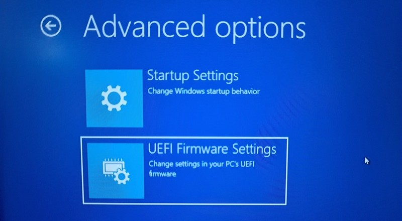

Learn Linux

How To Install Ubuntu Alongside Windows 10
Step by Step guid to Install Ubuntu along side with Windows
Read more →
How to Create Ubuntu Live USB in Windows
Step by step tutorial to make a Live Bootable USB in Windows by using
RUFUS
Read more →

How to Disable UEFI Secure Boot in Windows 10
Step by step tutorial to disable secure Boot in windows 10/8
Read more →

Enter UEFI mode in Windows 10
This tutorial shows how to enter into UEFI mode in Windows 10
Read more →
Uninstall Applications in Ubuntu
Diffrent ways of uninstalling Application in Ubuntu are..
Read more →
Enable SSH in ubuntu
Secure Shell (SSH) is a cryptographic network protocol used for a secure
connection between a client and a server.
Read more →